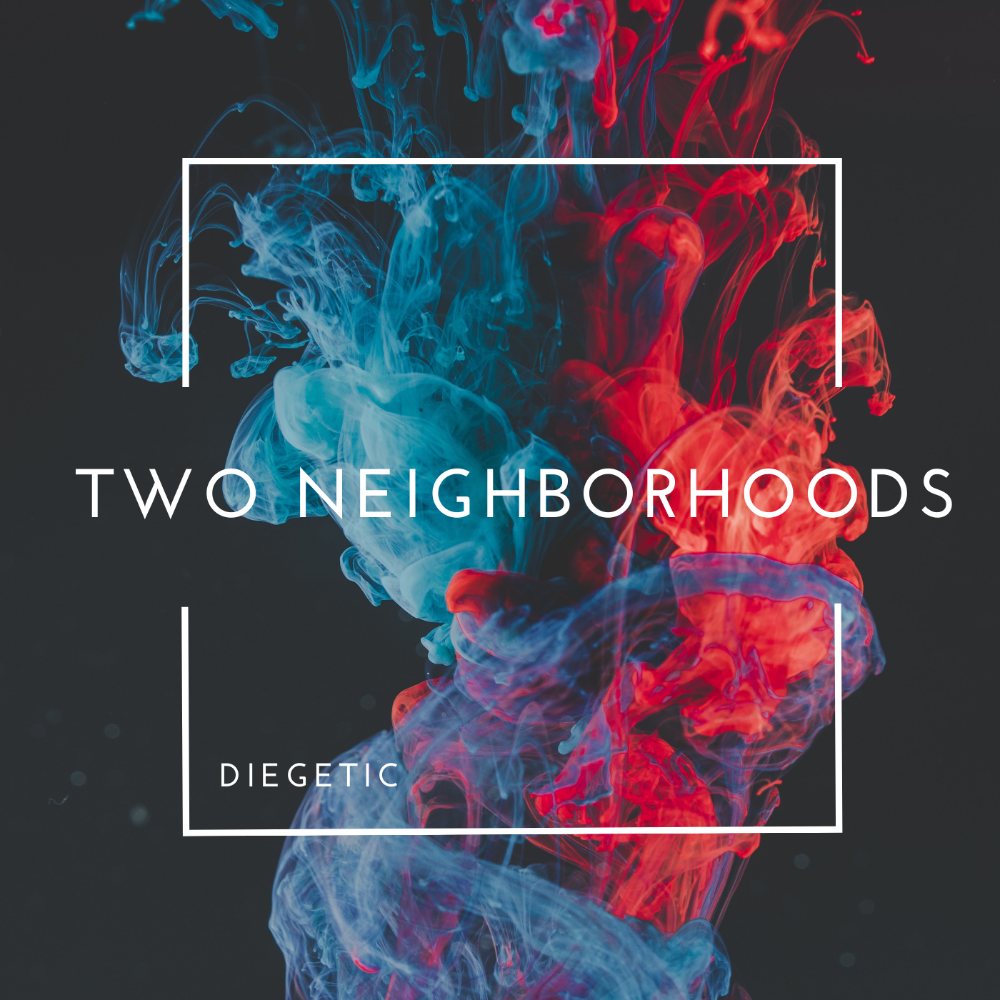

Hear the Album
Listen to Two Neighborhoods, the album, by Diegetic. By distorting and changing the soundscapes from this instrument using human instrumentation, Diegetic highlights inequities in air pollution in our communities. Listen on Spotify or Bandcamp.
Your Neighborhoods
Select two markers on the map to hear their air quality.
What Is This?
This is a musical instrument that turns air quality into music!
This project aims to raise awareness regarding inequities in air quality between neighborhoods by turning air pollution into music.
One of the greatest determiners of your health is your zip code. Air pollution is far higher in poor neighborhoods than nearby affluent neighborhoods. Often, this is due to the proximity to highways, factories, oil refineries, and other industrial sources.
Neighborhoods with high levels of air pollution are also disproportianely lived in by People of Color, leading to a form of aerosolized racism. Often, these communities are forced to shoulder the impacts of pollution, but see little of the economic benefits from the creation of these pollutants.
The long term health impacts of this are vast. Neighborhoods with lower air quality see higher rates of cancer and respiratory illnesses like asthma. Those who live in neighborhoods with high levels of air pollution have an average livespan 4 years shorter than their luckier neighbors. In the United States alone, over 100,000 people die each year due to air pollution.
Air pollution can also have immediate health impacts. On days when fine particle concentrations increase in a community, more people die from heart attacks and respiratory problems.
The music created here changes based on the differences in air quality between the two selected neighborhoods, becoming more chaotic and dark when there are vast differences in air quality, and calmer and more relaxing when differences are smaller.
Worse air quality in the two neighborhoods will distort the music and cause "errors" to occur in the melody.
Better air quality will minimize distortion and reduce errors. The further apart the two neighborhoods are, the more distant the music will sound.
How Do I Read This Map?
This map displays air quality using "PM2.5 Values." That, is, the number of particles in a cubic meter of air that are smaller than 2.5 micrometers in diameter (a human hair is about 70 micrometers in diameter).
These particles are inhaled and become embedded in your lungs or enter your bloodstream. These particles are also the primary cause of the "haze" of pollution.
A PM2.5 Value of less than 12 is generally considered to be acceptable air quality (although lower is far better). A value between 12 and 35 can be moderately dangerous for sensitive groups, like those with respiratory disorders or the elderly.
A value between 35 and 55 is considered moderately hazardous for all groups. Values above 55 become immediately dangerous and can cause long-term health impacts.
But even long-term exposure to air quality levels in the 30s and above can lead to worse health outcomes in humans. That is why even low level pollution - like from living near a highway - can cause harm in neighborhoods.
More About How This Works
The difference in air quality between the two neighborhoods determines if a major key or minor key is selected. This difference also determines the chord progression. A "normal," "relaxing" chord progression is chosen if the neighborhoods have very similar air qualities, and progressively more "chaotic," "unnatural" progressions are chosen as the air qualities diverge. The air quality of the first neighborhood chosen determines the root note (and from that, the key) of the progression. The higher the air quality, the higher the root tone will be. The air quality of the first neighborhood also selects the timbre of the synthesizer used for the backing chord progression. Lighter, airier sounds signify good air quality, while darker, ominous sounds signify worse. The air quality of the second neighborhood selects the timbre of the synthesizer for the melody under the same premise just described. The air quality of the second neighborhood also determines the relative "chaos" of the melody. Worse air quality will create more errors in the melody in the form of missed or off-beat notes. The distance in miles between the two air monitors chosen determines how much reverb is put on the mix of the two. The further the two neighborhoods are from each other, the more "distant" the music will sound.
This project and the accompanying album were funded by a grant from the Arrowhead Regional Arts Council.
This web application was built using Tone.js and data from public Purple Air monitors.